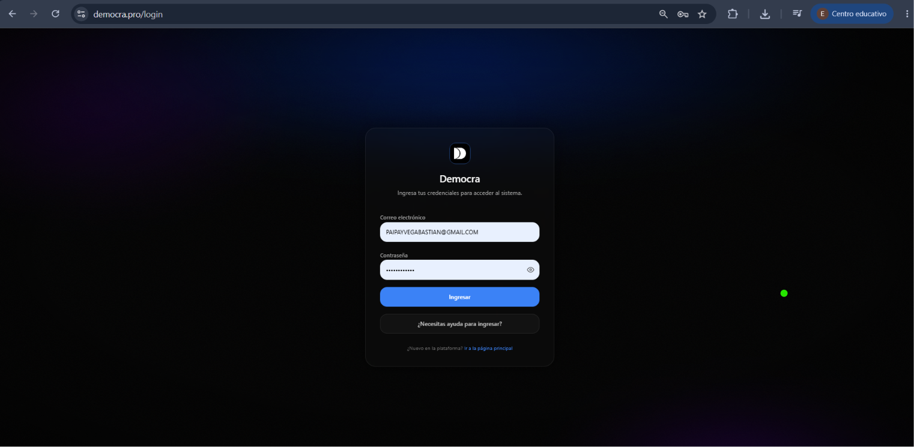
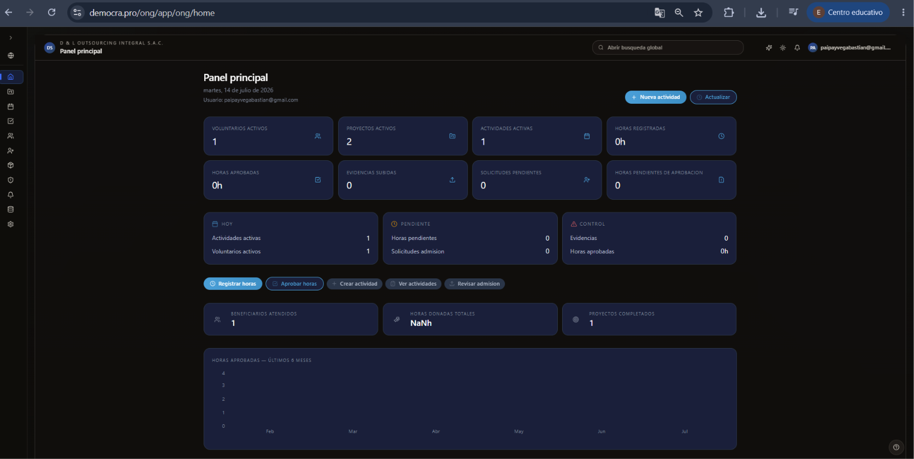
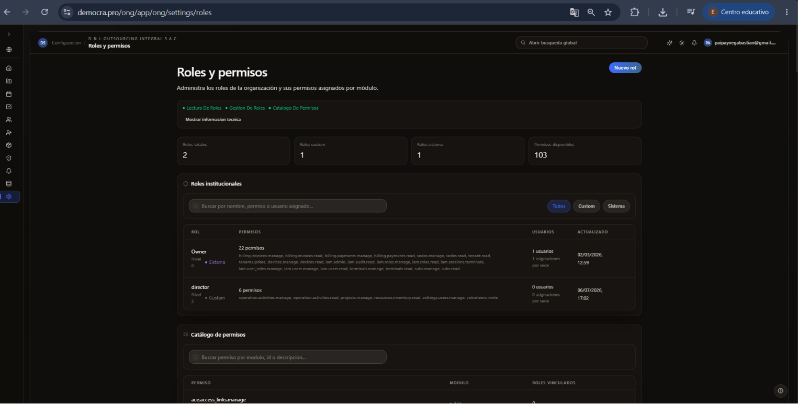
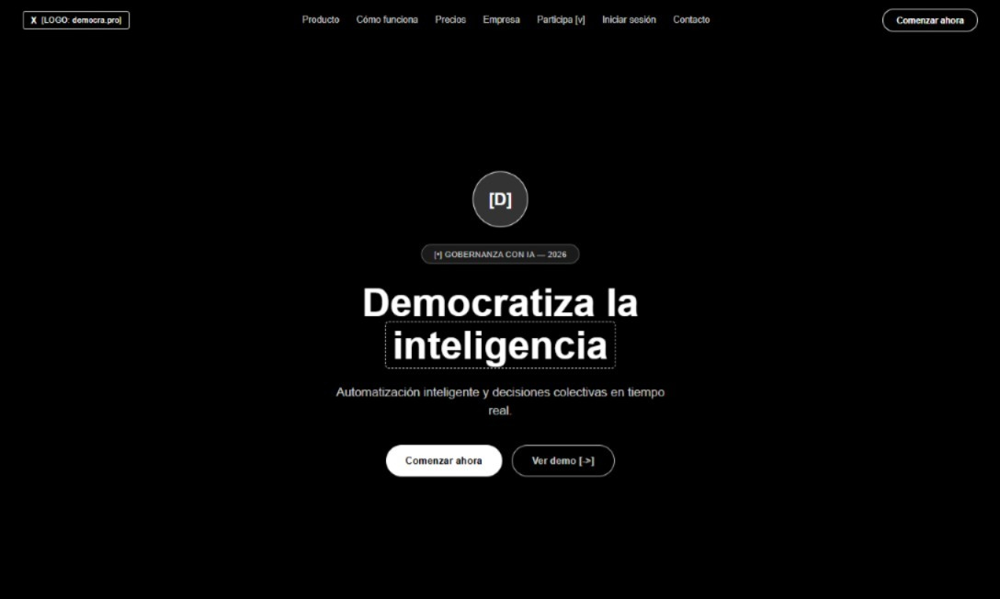
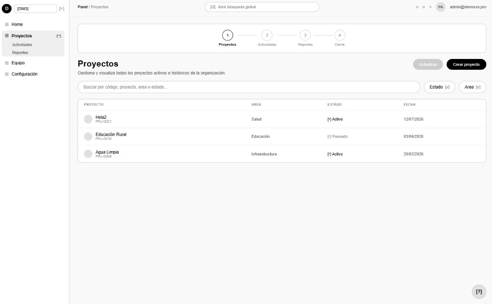
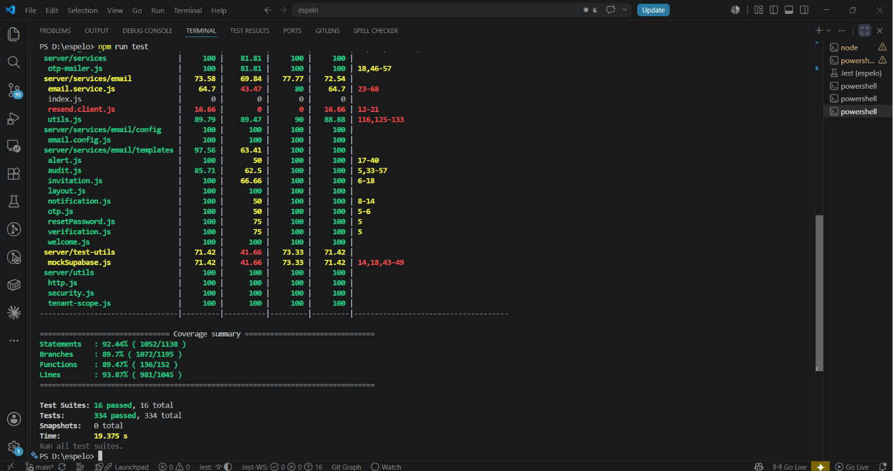
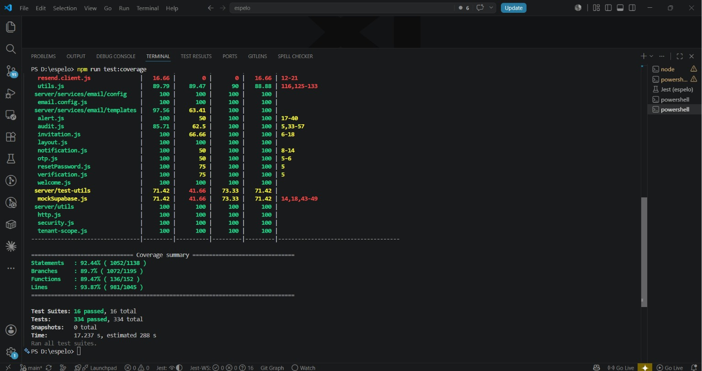
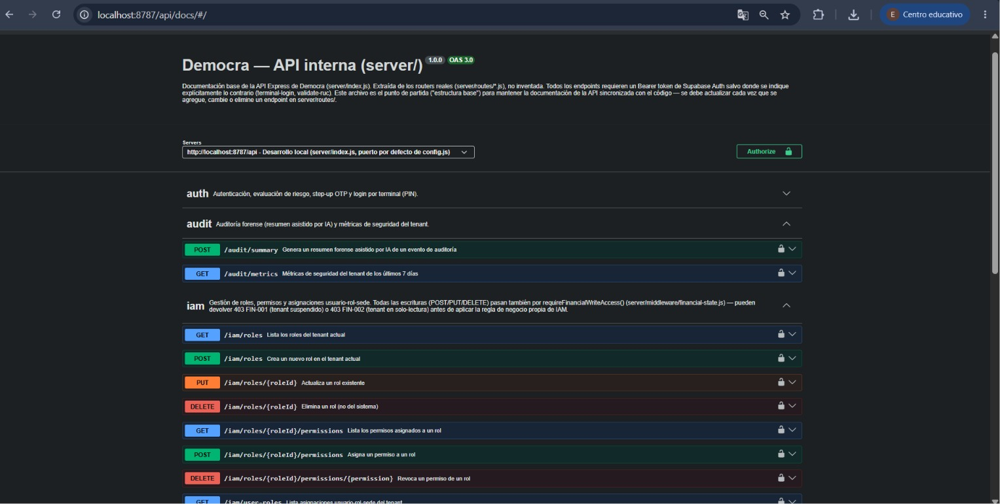

Democra
Plataforma SaaS Multi-Tenant para Gestión de ONG
Sustentación de Proyecto de Grado
Ingeniería de Sistemas - Arquitectura de Software
Agenda
- El Problema
- Solución Propuesta
- Metodología DDS
- Arquitectura General
- Stack Tecnológico
- Desarrollo y Código
- Calidad y Pruebas
- Demostración en Vivo
- Conclusiones
El Problema
- Gestión descentralizada en ONG.
- Procesos manuales ineficientes.
- Falta de control de voluntarios.
- Datos fragmentados y vulnerables.
[Falta Imagen del Problema - Referencia main.pdf]
(Añadir diagrama de problema extraído del PDF)
(Añadir diagrama de problema extraído del PDF)
Solución Propuesta
- Plataforma unificada en la nube.
- Arquitectura SaaS Multi-Tenant.
- Gestión integral automatizada.
- Alta disponibilidad y seguridad.

¿Qué es Democra?
- Entorno multi-organización.
- Panel de control centralizado.
- Sistema escalable y robusto.

Metodología DDS
- Domain-Driven Design (DDD).
- Enfoque en reglas de negocio.
- Escalabilidad técnica asegurada.
- Mantenibilidad a largo plazo.

Flujo DDS
Problema
→
Investigación
→
Diseño
→
Arquitectura
Implementación
→
Testing
→
Documentación
→
Despliegue
- Proceso iterativo e incremental.
- Calidad asegurada en cada fase.
Arquitectura General
- Separación de responsabilidades.
- Desacoplamiento de capas.
- Servicios modulares.
- Flujo de datos unidireccional.

Arquitectura del Código
- Usuario interactúa con UI.
- Componentes usan Hooks.
- Hooks llaman a Servicios.
- API conecta con BD.
Usuario
→
Frontend
→
Hooks / Servicios
→
API Express
→
Supabase (PostgreSQL)
Stack Tecnológico
| Categoría | Tecnologías Implementadas |
|---|---|
| Frontend | React Vite Tailwind |
| Backend | Node.js Express |
| Base de Datos | PostgreSQL Supabase |
| Testing | Vitest Jest Supertest |
| Seguridad | JWT RLS Helmet OTP |
| Documentación | Swagger Graphify |
Arquitectura de Datos
Enfoque Multi-Tenant
- Aislamiento de datos.
- Seguridad por inquilino (RLS).
- Rendimiento optimizado.
- Escalabilidad horizontal.

Seguridad
- RBAC: Control de accesos.
- JWT: Autenticación segura.
- RLS: Políticas a nivel de fila.
- OTP: Accesos de un solo uso.
- Helmet: Protección HTTP.

Wireframes y Prototipos
- Diseño centrado en usuario.
- Iteraciones ágiles.
- Validación de UX.


Implementación
- Entorno de desarrollo.
- Control de versiones estricto.
- Revisión de código (PR).
- Estándares de calidad.
[Captura de VSCode reservada para Demo en Vivo]
Calidad del Software
- Estándar ISO 25010.
- Vitest: Pruebas unitarias UI.
- Jest: Lógica del backend.
- Supertest: Integración API.
- Ejecución continua (CI).
Pruebas Unitarias
↓
Pruebas de Integración
↓
Análisis de Cobertura
Cobertura y Testing
Resultados de Pruebas

Reporte de Cobertura

Documentación Técnica
- Swagger: Contratos API.
- Graphify: Grafo de conocimiento.
- Trazabilidad completa.
- Integración continua.

Demostración en Vivo
- 1. Mostrar estructura del proyecto (VSCode).
- 2. Ejecutar suite de pruebas.
- 3. Revisar reporte de cobertura.
- 4. Explorar contratos de API (Swagger).
- 5. Demostrar sistema funcionando en vivo.
Resultados
| Métrica | Resultado Alcanzado |
|---|---|
| Plataforma | Operativa y Desplegada en la Nube |
| Arquitectura | Modelo SaaS Multi-Tenant Implementado |
| Seguridad | Reglas RLS, Roles RBAC y tokens JWT Activos |
| Cobertura | Alta fiabilidad del código probada |
Conclusiones
Logros Alcanzados
- Solución integral para ONG.
- Arquitectura escalable y segura.
- Código mantenible y testeado.
Trabajo Futuro
- Integración de Inteligencia Artificial.
- Módulos contables avanzados.
- Aplicación móvil nativa.